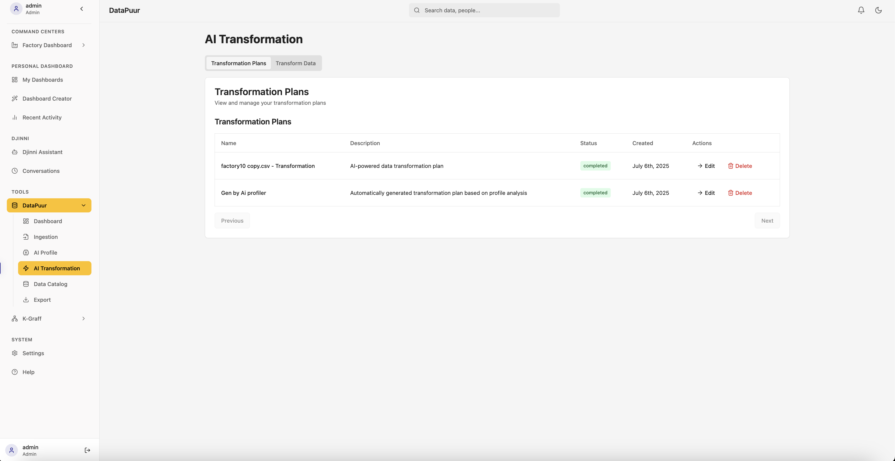

DataPuur
- Home
- Getting Started
- Djinni Assistant
- Tools
- DataPuur (You are here)
- KGInsights
- API Reference
Table of Contents
- Introduction
- Features Overview
- Accessing DataPuur
- Data Ingestion
- Supported File Formats
- Uploading Files
- Database Connections
- AI Profile
- Automatic Data Profiling
- Data Quality Assessment
- AI Transformation
- Data Cleaning
- Data Enrichment
- Data Normalization
- Data Catalog
- Export Options
- Best Practices
- Troubleshooting
Introduction
DataPuur is the comprehensive data management module of the RSW platform, designed to streamline the entire data lifecycle from ingestion to analysis. It provides tools for data acquisition, processing, profiling, transformation, and analytics, enabling users to extract valuable insights from their data.

Features Overview
- Data Ingestion: Upload files or connect to databases
- AI Profile: Automatic data profiling and quality assessment
- AI Transformation: Intelligent data cleaning and enrichment
- Data Catalog: Centralized repository of available datasets
- Export Options: Multiple formats for downstream use
- Dashboard: Visual overview of data metrics and status
Accessing DataPuur
- Navigation:
- Click on "DataPuur" in the sidebar under Tools
-
Use the dropdown to access specific DataPuur features
-
Interface Components:
- Dashboard: Overview of data metrics and status
- Ingestion: File upload and database connection
- AI Profile: Data profiling tools
- AI Transformation: Data transformation tools
- Data Catalog: Dataset browser
- Export: Download options
Data Ingestion
Supported File Formats
DataPuur supports multiple file formats for data ingestion:
- CSV: Comma-separated values
- JSON: JavaScript Object Notation
- Parquet: Columnar storage format
- Database Connections: Direct database access
Uploading Files
- Navigate to DataPuur > Ingestion
- Click "Upload File" button
- Select file from your computer
- Configure ingestion parameters:
- File format detection
- Column delimiter (for CSV)
- Header row options
- Data type inference
- Click "Start Ingestion"
- Monitor ingestion progress

Database Connections
DataPuur can connect directly to various database systems:
- Navigate to DataPuur > Ingestion
- Click "Connect Database"
- Select database type:
- PostgreSQL
- MySQL
- SQL Server
- Oracle
- MongoDB
- Enter connection parameters:
- Host/server
- Port
- Database name
- Username/password
- SSL options
- Test connection
- Select tables/collections to ingest
- Configure ingestion schedule (one-time or recurring)
AI Profile
The AI Profile feature uses advanced generative AI to automatically analyze and provide deep insights into your datasets, helping you understand data characteristics, quality issues, and potential use cases.
Starting a New AI Profiling Session
- Navigate to DataPuur > AI Profile
- Click on "Profile Sessions" tab
- Click "Start New AI Profiling Session"
- Select a data source from the list of available datasets
- Click "Start AI Analysis"
Profile List
The Profile List provides an overview of all profiled datasets with key metrics:
- Navigate to DataPuur > AI Profile
- Click on "Profile List" tab
- View profiled datasets with metrics:
- Dataset name
- Size (rows and columns)
- Duplicates (exact and fuzzy)
- Quality score
- Creation timestamp
- Available actions
Profile Details
The Profile Details view provides comprehensive insights into your dataset:
- Navigate to DataPuur > AI Profile
- Select a dataset from the Profile List
- View detailed profile information:
- Dataset overview (rows, columns, age)
- Quality score with rating (Excellent, Good, etc.)
- Duplicate analysis (exact and fuzzy duplicates)
- Column-specific analysis with interactive visualizations
- Value distributions and patterns
- Missing values analysis
- Statistical summaries

Data Quality Assessment
The AI Profile also provides a detailed data quality assessment:
- Completeness: Percentage of non-missing values
- Validity: Conformance to expected formats
- Accuracy: Correctness of values
- Consistency: Internal data coherence
- Uniqueness: Duplicate detection
- Timeliness: Data freshness
Each metric is scored from 0-100, with recommendations for improvement.
AI-Generated Analysis
The AI Profile provides a comprehensive natural language analysis of your dataset:
- Navigate to DataPuur > AI Profile > Profile Details
- Review the AI-generated analysis sections:
- Overview of Data Characteristics: Summary of dataset size, structure, and content
- Notable Features or Anomalies: Identification of unusual patterns or outliers
- Data Quality Assessment: Evaluation of data quality with specific issues
- Potential Use Cases: AI-suggested applications for the dataset
- Process & Quality Analysis: Insights into process performance and quality over time
- Productivity & Cost Reporting: Analysis of efficiency metrics and cost factors
- Workforce Insights: Assessment of workforce patterns and performance
- Action Points: Recommended next steps to improve data quality
Session History
Access and manage your previous AI profiling sessions:
- Navigate to DataPuur > AI Profile
- Click on "Profile Sessions" tab
- View list of previous profiling sessions with:
- Dataset name
- Creation timestamp
- Session status (Active, Completed)
- AI-generated summary
- Options to resume analysis or view details
AI Transformation
The AI Transformation feature uses advanced generative AI to intelligently transform your datasets, automatically applying the most appropriate data cleaning, enrichment, and normalization techniques based on your specific data characteristics and business needs.
Transform Data
- Navigate to DataPuur > AI Transformation
- Click on the "Transform Data" tab
- Select a dataset from the available list
- Click the "Transform" button next to your selected dataset
- The system will begin the AI-powered transformation process
Transformation Plans
Transformation Plans allow you to view, manage, and create reusable data transformation workflows:
- Navigate to DataPuur > AI Transformation
- Click on the "Transformation Plans" tab
- View existing transformation plans with details:
- Plan name
- Description
- Status (Completed, In Progress)
- Creation timestamp
- Available actions (Edit, Delete)

Edit Transformation Plan
The Edit Transformation Plan interface allows you to customize and refine your data transformation workflows:
- Navigate to DataPuur > AI Transformation > Transformation Plans
- Click "Edit" next to the plan you want to modify
- Update plan details:
- Name
- Description
- Modify transformation steps with AI assistance
- Click "Execute Plan" to apply the updated transformations
AI Assistant for Transformations
The AI Assistant helps you create and refine transformation plans through natural language interaction:
- In the Edit Transformation Plan view, interact with the AI Assistant panel
- View AI-suggested transformation steps based on your data profile
- Examples of transformation operations:
- Remove irrelevant or redundant columns
- Detect and impute missing values
- Standardize formats and units
- Generate derived features
- Type your own transformation instructions in natural language
- Click "Update Plan" to incorporate your changes
Transformation Execution and Results
After executing a transformation plan, you can view detailed results and the transformed dataset:
- The transformation execution page shows:
- Step-by-step execution of each transformation operation
- Detailed script of applied transformations
- Execution status and results
- Before/after metrics for data quality
- Click "View Catalog" to access the transformed dataset in the Data Catalog
Common Transformation Operations
The AI Transformation feature can perform various operations automatically:
Data Cleaning
- Missing value detection and imputation
- Outlier identification and handling
- Error correction and validation
- Format standardization
- Duplicate removal
Data Enrichment
- Feature generation
- Derived metrics calculation
- Temporal feature extraction
- Statistical aggregations
- Data type conversions
Data Normalization
- Date/time standardization
- Text case normalization
- Unit conversion
- Numerical scaling (min-max, z-score)
- Categorical encoding
Data Catalog
The Data Catalog provides a centralized repository of transformed and clean datasets that are ready for analysis and decision-making:
- Navigate to DataPuur > Data Catalog
- Browse available datasets
- View dataset details:
- Schema information
- Quality metrics
- Transformation history
- Data lineage (tracking data origins and transformations)
- Usage statistics
- Data quality certifications
- Tags and descriptions

Export Options
DataPuur offers multiple export options for processed data:
- Navigate to DataPuur > Export
- Select a dataset
- Export as CSV format
- Configure export options:
- Column selection
- Filtering
- Sorting
- Compression
- Generate export
- Download or access via API
Best Practices
Data Ingestion Best Practices
- Prepare your data:
- Ensure consistent formatting
- Validate file integrity
-
Document data sources
-
Configure appropriately:
- Set correct delimiters
- Specify header rows
-
Define data types when possible
-
Monitor ingestion:
- Check for warnings and errors
- Verify row counts
- Validate sample data
Data Profiling Best Practices
- Profile early:
- Run AI Profile immediately after ingestion
-
Address quality issues before analysis
-
Review all metrics:
- Check completeness scores
- Investigate anomalies
-
Understand distributions
-
Document findings:
- Save profile reports
- Note data limitations
- Share insights with stakeholders
Data Transformation Best Practices
- Incremental approach:
- Apply transformations in logical order
- Validate after each step
-
Maintain transformation history
-
Preserve raw data:
- Keep original datasets
- Document transformation steps
-
Enable reproducibility
-
Test thoroughly:
- Verify transformations with samples
- Check edge cases
- Validate business rules
Troubleshooting
Ingestion Issues
- File Upload Failures:
- Check file size limits (max 500MB per file)
- Verify file format and encoding
-
Check for file corruption
-
Database Connection Problems:
- Verify connection parameters
- Check network connectivity
-
Confirm database permissions
-
Parsing Errors:
- Check for delimiter mismatches
- Verify character encoding
- Look for malformed records
Profiling Issues
- Slow Profile Generation:
- Large datasets may take time
- Check system resources
-
Consider sampling for initial profiles
-
Incomplete Profiles:
- Check for timeout errors
- Verify data access permissions
- Look for unsupported data types
Transformation Issues
- Failed Transformations:
- Check error messages
- Verify data compatibility
-
Review transformation rules
-
Unexpected Results:
- Compare before/after samples
- Check transformation parameters
- Verify business logic
Next: KGInsights
Last updated: July 6, 2025